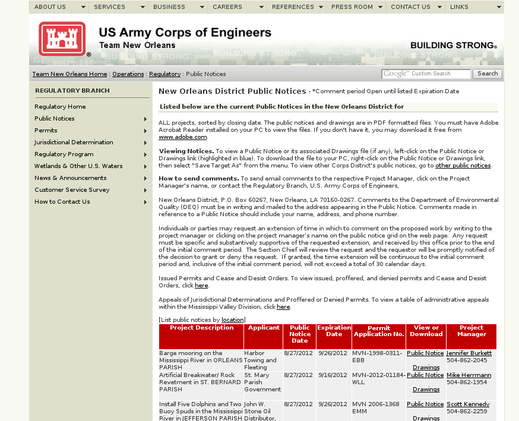
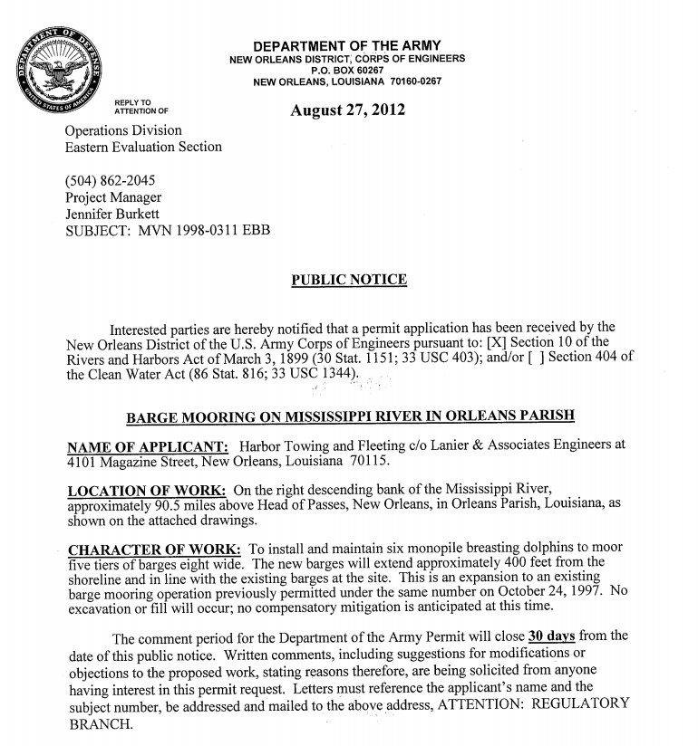

{kind=link}
New Orleans Wetlands
My script extracts this information.

The Gulf Restoration Network on wetlands
The [Gulf Restoration Network] works to protect wetlands from reckless development, destructive logging practices, and harmful U.S. Army Corps of Engineers projects and policies.
More specifically
Applications get posted to a website.
Applications look like this.
In the past, Scott has had to do this manually. But he doesn't really have time for that.
We're using a computer program to make the first two of these steps easier.
My script extracts this information.
It also
For each application, we have two PDF files.
Lots of data have been cleaned up and put in a spreadsheet.
Lots more could be extracted.
Where are these applications most common?
Who submits applications where?
What do the proposed sites currently look like?
&c.
We currently have parish of each application but not latitude and longitude.
The coordinates are generally contained in a particular paragraph in the public notice PDFs.
The PDFs have already been converted to text.
&c.
There are 50 more applications in a different format from an old version of the script.
Total area of a proposed development is related to its environmental impact.
Currently, the script overestimates this figure.
This figure is generally contained in a particular paragraph in the public notice PDFs.
The PDFs have already been converted to text.
How does application submission relate to parish population?
On what days of the week do they get submitted?
What companies are submitting these applications?
&c.
Ideas
Find me tomorrow.
Read more.
https://github.com/tlevine/ecohack-wetlands
/
#